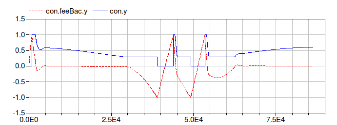
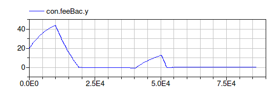
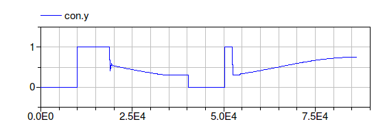
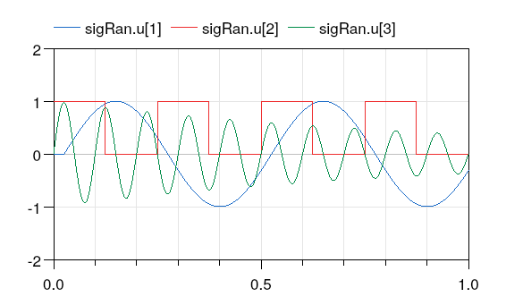
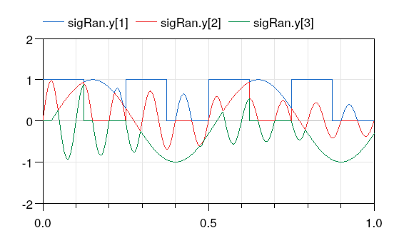
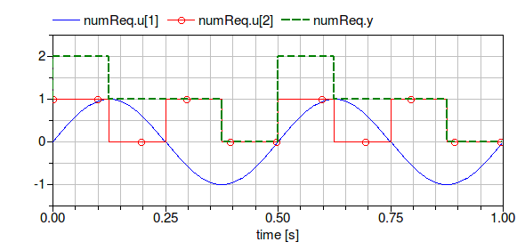
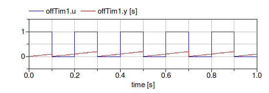
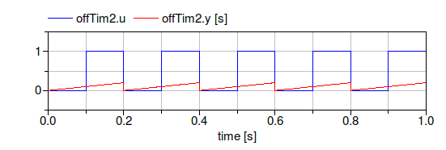

This package contains examples for the use of models that can be found in Buildings.Controls.Continuous.
Extends from Modelica.Icons.ExamplesPackage (Icon for packages containing runnable examples).| Name | Description |
|---|---|
| Test model for PID controller with optional reverse action | |
| Example model for PID controller with hysteresis | |
| Example model for PID controller with hysteresis and timer | |
| Example model for signal ranker | |
| Example model for block that outputs the number of requests | |
| Example model for off timer |
 Buildings.Controls.Continuous.Examples.LimPID
Buildings.Controls.Continuous.Examples.LimPID
This model tests the implementation of the
PID controller with optional reverse action.
The model limPIDOri is the original
implementation of the controller from the Modelica
Standard Library. The models limPID
and limPIDRev are the implementations
from the Buildings library. The model
limPIDRev is parameterized to have
reverse action.
The assertion blocks test whether the results
of all three controllers are identical.
model LimPID "Test model for PID controller with optional reverse action" extends Modelica.Icons.Example;Modelica.Blocks.Sources.Pulse pulse(period=0.25); Buildings.Controls.Continuous.LimPID limPID( controllerType=Modelica.Blocks.Types.SimpleController.PID, Ti=1, Td=1, yMax=1, yMin=-1, initType=Modelica.Blocks.Types.InitPID.InitialState); Buildings.Controls.Continuous.LimPID limPIDRev( controllerType=Modelica.Blocks.Types.SimpleController.PID, reverseAction=true, Ti=1, Td=1, yMax=1, yMin=-1, initType=Modelica.Blocks.Types.InitPID.InitialState) "Controller with reverse action"; Modelica.Blocks.Sources.Constant const(k=0.5); Modelica.Blocks.Math.Gain gain(k=-1); Buildings.Utilities.Diagnostics.AssertEquality assertEquality(threShold=1e-10); Modelica.Blocks.Continuous.LimPID limPIDOri( controllerType=Modelica.Blocks.Types.SimpleController.PID, Ti=1, Td=1, yMax=1, yMin=-1, initType=Modelica.Blocks.Types.InitPID.InitialState); Buildings.Utilities.Diagnostics.AssertEquality assertEquality1( threShold=1e-10); equationconnect(pulse.y, limPID.u_s); connect(pulse.y, limPIDRev.u_s); connect(const.y, limPID.u_m); connect(const.y, limPIDRev.u_m); connect(limPIDRev.y, gain.u); connect(gain.y, assertEquality.u2); connect(limPID.y, assertEquality.u1); connect(pulse.y, limPIDOri.u_s); connect(const.y, limPIDOri.u_m); connect(assertEquality1.u1, limPIDOri.y); connect(assertEquality1.u2, limPID.y); end LimPID;
Buildings.Controls.Continuous.Examples.PIDHysteresis
Example that demonstrates the use of the PID controller
with hysteresis. The control objective is to keep
the temperature of the energy storage cap
at 40°C.
The controller con is parameterized to
switch on if the control error is bigger than
eon=1.
The output of the controller remains above ymin=0.3 until the control
error is smaller than eoff=-1, at which
time the controller outputs y=0 until the
control error is again bigger than 1.
The figure below shows the control error
con.feeBac.y and the control signal
con.y.

Extends from Modelica.Icons.Example (Icon for runnable examples).model PIDHysteresis "Example model for PID controller with hysteresis" extends Modelica.Icons.Example;Buildings.Controls.Continuous.PIDHysteresis con( pre_y_start=false, controllerType=Modelica.Blocks.Types.SimpleController.PI, yMin=0.3, Ti=600, Td=60); Modelica.Blocks.Sources.Constant TSet(k=273.15 + 40, y(unit="K")) "Set point"; Modelica.Thermal.HeatTransfer.Components.HeatCapacitor cap(C=1000000, T(start= 313.15, fixed=true)); Buildings.HeatTransfer.Sources.PrescribedTemperature TBC; Modelica.Thermal.HeatTransfer.Components.ThermalConductor theCon(G=20); Modelica.Blocks.Math.Gain gain(k=2000); Modelica.Thermal.HeatTransfer.Sensors.TemperatureSensor temSen; Buildings.HeatTransfer.Sources.PrescribedHeatFlow Q_flow; Modelica.Blocks.Sources.Sine sine( freqHz=1/86400, offset=273.15, amplitude=20, phase=-1.5707963267949, y(unit="K")); equationconnect(TSet.y, con.u_s); connect(TBC.port, theCon.port_a); connect(theCon.port_b, cap.port); connect(con.y, gain.u); connect(cap.port, temSen.port); connect(temSen.T, con.u_m); connect(gain.y, Q_flow.Q_flow); connect(Q_flow.port, cap.port); connect(sine.y, TBC.T); end PIDHysteresis;
Buildings.Controls.Continuous.Examples.PIDHysteresisTimer
Example that demonstrates the use of the PID controller
with hysteresis and off timer.
The example is identical to
Buildings.Controls.Continuous.Examples.PIDHysteresis,
except that the controller also has an off timer.
This timer keeps the control signal at y=0
for a period of minOffTime=1000 seconds.
This may be used to avoid short-cycling if the load is small
and the system has little heat capacity.
The figure below shows the control error
con.feeBac.y and the control signal
con.y.


model PIDHysteresisTimer "Example model for PID controller with hysteresis and timer" extends Modelica.Icons.Example;Buildings.Controls.Continuous.PIDHysteresisTimer con( yMin=0.3, minOffTime=10000, controllerType=Modelica.Blocks.Types.SimpleController.PI, Ti=60, Td=10); Modelica.Blocks.Sources.Constant TSet(k=273.15 + 40, y(unit="K")) "Set point"; Modelica.Thermal.HeatTransfer.Components.HeatCapacitor cap(C=100000, T(start= 293.15, fixed=true)); Buildings.HeatTransfer.Sources.PrescribedTemperature TBC; Modelica.Thermal.HeatTransfer.Components.ThermalConductor theCon(G=10); Modelica.Blocks.Math.Gain gain(k=800); Modelica.Thermal.HeatTransfer.Sensors.TemperatureSensor temSen; Buildings.HeatTransfer.Sources.PrescribedHeatFlow Q_flow; Modelica.Blocks.Sources.Sine sine( freqHz=1/86400, offset=273.15, amplitude=20, phase=-1.5707963267949); equationconnect(TSet.y, con.u_s); connect(TBC.port, theCon.port_a); connect(theCon.port_b, cap.port); connect(con.y, gain.u); connect(cap.port, temSen.port); connect(temSen.T, con.u_m); connect(gain.y, Q_flow.Q_flow); connect(Q_flow.port, cap.port); connect(sine.y, TBC.T); end PIDHysteresisTimer;
Buildings.Controls.Continuous.Examples.SignalRanker
Example that demonstrates the use of the signal ranker model.
The figure below shows the input and output signals of the block.
Note that
sigRan.y[1] ≥ sigRan.y[2] ≥ sigRan.y[3].


model SignalRanker "Example model for signal ranker" extends Modelica.Icons.Example;Modelica.Blocks.Sources.Sine sine(freqHz=2); Modelica.Blocks.Sources.Pulse pulse(period=0.25); Buildings.Controls.Continuous.SignalRanker sigRan( nin=3); Modelica.Blocks.Sources.ExpSine expSine(freqHz=10, damping=1); equationconnect(sine.y, sigRan.u[1]); connect(pulse.y, sigRan.u[2]); connect(expSine.y, sigRan.u[3]); end SignalRanker;
Buildings.Controls.Continuous.Examples.NumberOfRequestsExample that demonstrates the use of the block Buildings.Controls.Continuous.NumberOfRequests. The parameters of the block are such that the output is incremented for each input signal that is strictly larger than 0. The figure below shows the inputs and the output of the block.

Extends from Modelica.Icons.Example (Icon for runnable examples).model NumberOfRequests "Example model for block that outputs the number of requests" extends Modelica.Icons.Example;Buildings.Controls.Continuous.NumberOfRequests numReq( nin=2, threShold=0, kind=0); Modelica.Blocks.Sources.Sine sine(freqHz=2); Modelica.Blocks.Sources.Pulse pulse(period=0.25); equationconnect(sine.y, numReq.u[1]); connect(pulse.y, numReq.u[2]); end NumberOfRequests;
Buildings.Controls.Continuous.Examples.OffTimer
Example that demonstrates the use of the model
Buildings.Controls.Continuous.OffTimer.
The input to the two timers are alternating boolean values.
Whenever the input becomes false(=0), the timer is reset.
The figures below show the input and output of the blocks.


model OffTimer "Example model for off timer" extends Modelica.Icons.Example;Modelica.Blocks.Sources.BooleanPulse booleanPulse(period=0.2); Buildings.Controls.Continuous.OffTimer offTim1; Buildings.Controls.Continuous.OffTimer offTim2; Modelica.Blocks.Logical.Not not1; equationconnect(booleanPulse.y, offTim1.u); connect(booleanPulse.y, not1.u); connect(offTim2.u, not1.y); end OffTimer;